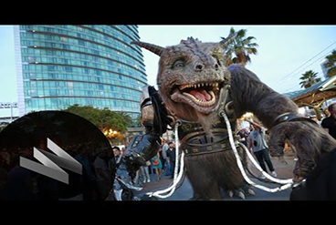
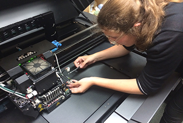
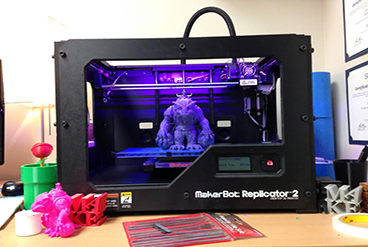
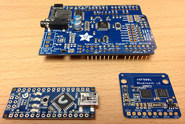
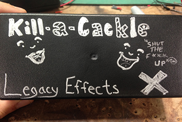

While I was at Legacy Effects in the Summer of 2014, I worked in fabrication to mechanical engineering. Using the top of the line 3-D printers and a knowlege base that stems to the production of the original Predator movie, Legacy Effects gave me ample opportunities to learn. Bellow is a short list from the 25 projects I worked on this summer.
Giant Creature
This epic Monster of a puppet was designed in less than a week and build in about four weeks. The total project lasted a little more than a month. Sitting a top the Giant Creature, Bodok, was Ja'naar (the somewhat important). Together they where fully moveable and could talk back and forth between each other. I was in charge of designing the light system layout and programming the lights on the balls.
As seen on Jimmy Kimmel...
The Giant Creature came to life before San Deigo Comic Con. Watch the behind the scenes on set at Jimmy Kimmel's show.

Creature at San Diego Comic Con 2014:
The creature couldn't just stand looking pretty, it had to move as well. The creature walked around and terrorized the convention goers with fully mobile feet and face. It only took four men to puppeteer. Discover how we built it here
3-D Printing or Additive Manufacturing

The Life of Additive Manufacturing
Working at Legacy gave me the time to learn more about 3-D printers. After working on the Connex3, Connex500, the Eden260V, and the MakerBot Replicator 2, I say "Game on" to 3-D printing.

Giant Creature Figurines
The Makerbot Replicator 2 was used in order to make Models of the Giant Creature. The Figurines made amazing thank you gifts for all the people who worked on making the monster come alive.
Commercials
During my time at Legacy Effects I worked on 25 different props, puppets, and costumes for commercials, TV productsions, and Film. Here are some highlights.
Kill-a-Cackle
A side project for one of the bosses of Legacy, Kill-a-Cackle was created to halt the cackling of one employee. Using Adafruit's "Music Maker", nrF8001 LE Bluetooth Chip, Arduino Nano, a LED light and LBF speaker, the kill-a-cackle could silence the loudest laugher, from up to 20 feet away. Heavy use of coding and hardware assembly.

Arduino and Adafruit
These are almost all of the boards and shields used for the kill-a-cackle. Counter-clockwise from the top: Adafruit Music Maker, Arduino Micro, and NRF8001 Bluetooth LE.

Final Product
Black plastic box, decorated by yours truly with a silver sharpie.